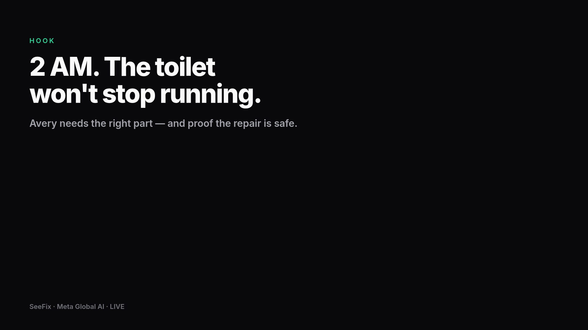
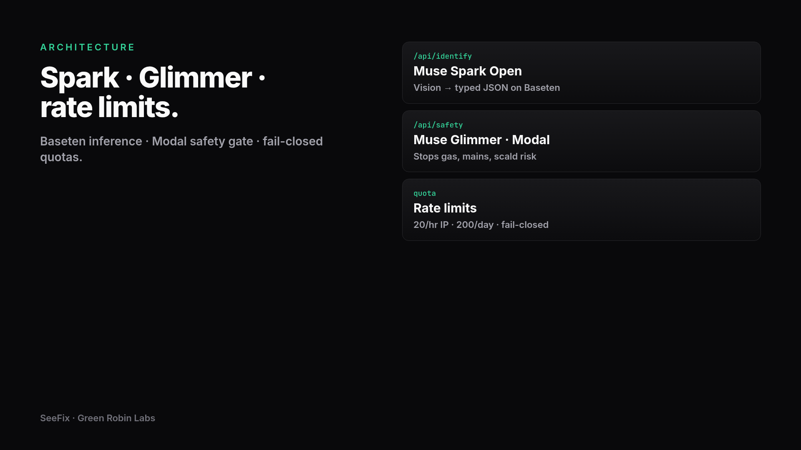
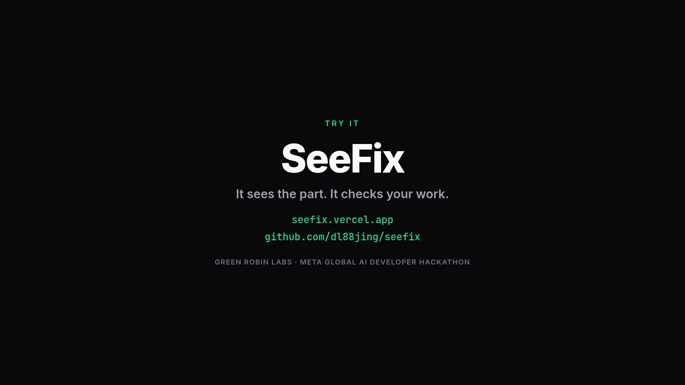

SeeFix · Meta Global AI · LIVE
Demo walkthrough
Live app · seefix.vercel.app
Screen recording
Live identify · Muse Spark Open · Baseten
Screen recording
Inspect result · safety gate
Screen recording

Architecture · Spark · Glimmer · quotas
SeeFix

Try it · seefix.vercel.app
Green Robin Labs